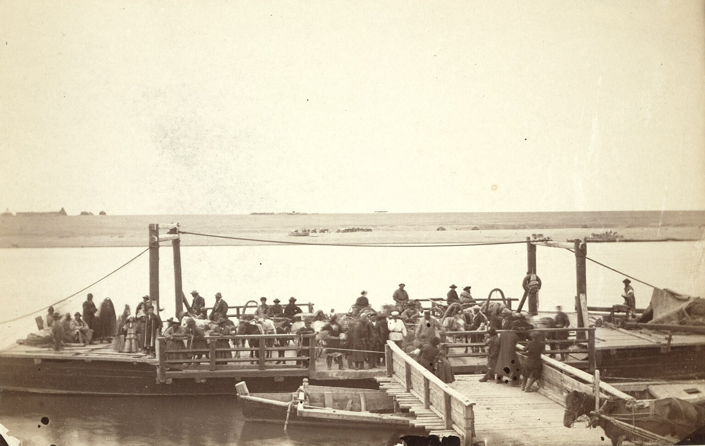

Семипалатинск 1885

Опубликовано 9 ноября 2026
В 1885 году фотограф, сопровождавший экспедицию по Степному краю, снял Семипалатинск и его окрестности: город на правом берегу Иртыша, паромную переправу, базарную площадь и казахский аул у окраины. Альбом хранится в Библиотеке Конгресса США, а фонды ГА ВКО позволяют прочитать эти кадры вместе с документами.
Семипалатинск был торговым узлом: сюда сходились караванные пути из Китая, Сибири и степи. Паром связывал берега, базар определял ритм города, а областные обзоры военного губернатора записывали число жителей, торговых оборотов и перевозимых грузов.
Выставка состоит из шести глав. У каждого снимка есть ссылки на дела, в которых можно найти статистику и описание тех же мест, например «Обзор Семипалатинской области за 1893 год» (Ф. 1-П, оп. 1, д. 118) и перепись 1897 года (Ф. 1-П, оп. 1, д. 245).